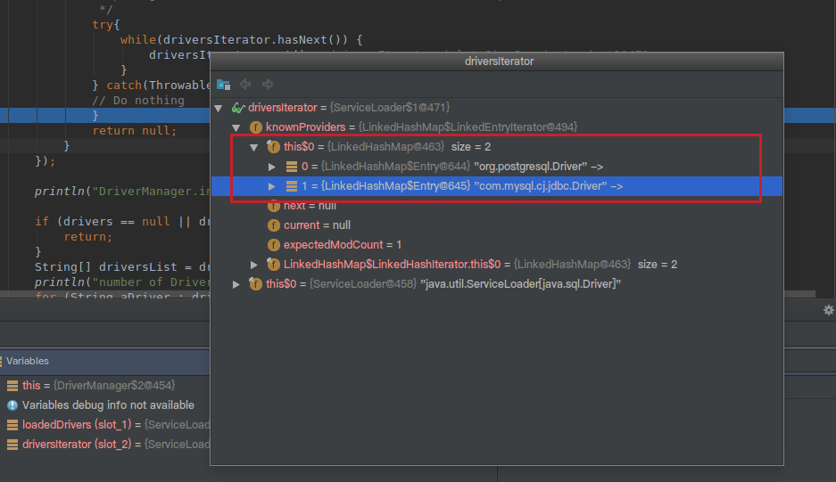

SPI，Service Provider Interface，主要是被框架的开发人员使用，比如java.sql.Driver接口，其他不同厂商可以针对同一接口做出不同的实现，mysql和postgresql都有不同的实现提供给用户，而Java的SPI机制可以为某个接口寻找服务实现。
当服务的提供者提供了一种接口的实现之后，需要在classpath下的META-INF/services/目录里创建一个以服务接口命名的文件，这个文件里的内容就是这个接口的具体的实现类。当其他的程序需要这个服务的时候，就可以通过查找这个jar包（一般都是以jar包做依赖）的META-INF/services/中的配置文件，配置文件中有接口的具体实现类名，可以根据这个类名进行加载实例化，就可以使用该服务了。JDK中查找服务的实现的工具类是：java.util.ServiceLoader。
SPI实例
有很多的SPI扩展机制应用的实例，比如common-logging，JDBC等等，我们这里以JDBC为例。
JDBC
在JDBC4.0之前，我们开发有连接数据库的时候，通常会用Class.forName("com.mysql.jdbc.Driver")这句先加载数据库相关的驱动，然后再进行获取连接等的操作。而JDBC4.0之后不需要用Class.forName("com.mysql.jdbc.Driver")来加载驱动，直接获取连接就可以了，现在这种方式就是使用了Java的SPI扩展机制来实现。
JDBC接口定义
首先在java中定义了接口java.sql.Driver，并没有具体的实现，具体的实现都是由不同厂商来提供的。
mysql实现
在mysql的jar包mysql-connector-java-6.0.6.jar中，可以找到META-INF/services目录，该目录下会有一个名字为java.sql.Driver的文件，文件内容是com.mysql.cj.jdbc.Driver，这里面的内容就是针对Java中定义的接口的实现。
postgresql实现
同样在postgresql的jar包postgresql-42.0.0.jar中，也可以找到同样的配置文件，文件内容是org.postgresql.Driver，这是postgresql对Java的java.sql.Driver的实现。
使用方法
上面说了，现在使用SPI扩展来加载具体的驱动，我们在Java中写连接数据库的代码的时候，不需要再使用Class.forName("com.mysql.jdbc.Driver")来加载驱动了，而是直接使用如下代码：
1
2
3
| String url = "jdbc:xxxx://xxxx:xxxx/xxxx";
Connection conn = DriverManager.getConnection(url,username,password);
.....
|
这里并没有涉及到spi的使用，接着看下面的解析。
源码实现
上面的使用方法，就是我们普通的连接数据库的代码，并没有涉及到SPI的东西，但是有一点我们可以确定的是，我们没有写有关具体驱动的硬编码Class.forName("com.mysql.jdbc.Driver")！
上面的代码可以直接获取数据库连接进行操作，但是跟SPI有啥关系呢？上面代码没有了加载驱动的代码，我们怎么去确定使用哪个数据库连接的驱动呢？这里就涉及到使用Java的SPI扩展机制来查找相关驱动的东西了，关于驱动的查找其实都在DriverManager中，DriverManager是Java中的实现，用来获取数据库连接，在DriverManager中有一个静态代码块如下：
1
2
3
4
| static {
loadInitialDrivers();
println("JDBC DriverManager initialized");
}
|
可以看到是加载实例化驱动的，接着看loadInitialDrivers方法：
1
2
3
4
5
6
7
8
9
10
11
12
13
14
15
16
17
18
19
20
21
22
23
24
25
26
27
28
29
30
31
32
33
34
35
36
37
38
39
40
41
42
43
44
45
| private static void loadInitialDrivers() {
String drivers;
try {
drivers = AccessController.doPrivileged(new PrivilegedAction<String>() {
public String run() {
return System.getProperty("jdbc.drivers");
}
});
} catch (Exception ex) {
drivers = null;
}
AccessController.doPrivileged(new PrivilegedAction<Void>() {
public Void run() {
//使用SPI的ServiceLoader来加载接口的实现
ServiceLoader<Driver> loadedDrivers = ServiceLoader.load(Driver.class);
Iterator<Driver> driversIterator = loadedDrivers.iterator();
try{
while(driversIterator.hasNext()) {
driversIterator.next();
}
} catch(Throwable t) {
// Do nothing
}
return null;
}
});
println("DriverManager.initialize: jdbc.drivers = " + drivers);
if (drivers == null || drivers.equals("")) {
return;
}
String[] driversList = drivers.split(":");
println("number of Drivers:" + driversList.length);
for (String aDriver : driversList) {
try {
println("DriverManager.Initialize: loading " + aDriver);
Class.forName(aDriver, true,
ClassLoader.getSystemClassLoader());
} catch (Exception ex) {
println("DriverManager.Initialize: load failed: " + ex);
}
}
}
|
上面的代码主要步骤是：
- 从系统变量中获取有关驱动的定义。
- 使用SPI来获取驱动的实现。
- 遍历使用SPI获取到的具体实现，实例化各个实现类。
- 根据第一步获取到的驱动列表来实例化具体实现类。
我们主要关注2,3步，这两步是SPI的用法，首先看第二步，使用SPI来获取驱动的实现，对应的代码是：
1
| ServiceLoader<Driver> loadedDrivers = ServiceLoader.load(Driver.class);
|
这里没有去META-INF/services目录下查找配置文件，也没有加载具体实现类，做的事情就是封装了我们的接口类型和类加载器，并初始化了一个迭代器。
接着看第三步，遍历使用SPI获取到的具体实现，实例化各个实现类，对应的代码如下：
1
2
3
4
5
6
| //获取迭代器
Iterator<Driver> driversIterator = loadedDrivers.iterator();
//遍历所有的驱动实现
while(driversIterator.hasNext()) {
driversIterator.next();
}
|
在遍历的时候，首先调用driversIterator.hasNext()方法，这里会搜索classpath下以及jar包中所有的META-INF/services目录下的java.sql.Driver文件，并找到文件中的实现类的名字，此时并没有实例化具体的实现类（ServiceLoader具体的源码实现在下面）。
然后是调用driversIterator.next();方法，此时就会根据驱动名字具体实例化各个实现类了。现在驱动就被找到并实例化了。
可以看下截图，我在测试项目中添加了两个jar包，mysql-connector-java-6.0.6.jar和postgresql-42.0.0.0.jar，跟踪到DriverManager中之后：

可以看到此时迭代器中有两个驱动，mysql和postgresql的都被加载了。有关两个驱动都加载了，具体使用哪个驱动，请自行深入jdbc的源码。这里不做过多解析。
SPI的使用步骤总结
看完上面的数据库驱动的解析，应该都能知道大概的流程了：
- 有关组织或者公司定义标准。
- 具体厂商或者框架开发者实现。
- 程序猿使用。
定义标准
定义标准，就是定义接口。比如接口java.sql.Driver
具体厂商或者框架开发者实现。
厂商或者框架开发者开发具体的实现：
- 在
META-INF/services目录下定义一个名字为接口全限定名的文件，比如java.sql.Driver文件，文件内容是具体的实现名字，比如me.cxis.sql.MyDriver。
- 写具体的实现
me.cxis.sql.MyDriver，都是对接口Driver的实现。
程序猿使用
我们会引用具体厂商的jar包来实现我们的功能：
1
2
3
4
5
6
7
8
| ServiceLoader<Driver> loadedDrivers = ServiceLoader.load(Driver.class);
//获取迭代器
Iterator<Driver> driversIterator = loadedDrivers.iterator();
//遍历
while(driversIterator.hasNext()) {
driversIterator.next();
//可以做具体的业务逻辑
}
|
SPI相关的源码解析
1
2
3
4
5
6
7
8
9
10
11
12
13
14
15
16
17
18
19
20
21
22
23
24
25
26
27
28
29
30
31
32
33
34
35
36
37
38
39
40
41
42
43
44
45
46
47
48
49
50
51
52
53
54
55
56
57
58
59
60
61
62
63
64
65
66
67
68
69
70
71
72
73
74
75
76
77
78
79
80
81
82
83
84
85
86
87
88
89
90
91
92
93
94
95
96
97
98
99
100
101
102
103
104
105
106
107
108
109
110
111
112
113
114
115
116
117
118
119
120
121
122
123
124
125
126
127
128
129
130
131
132
133
134
135
136
137
138
139
140
141
142
143
144
145
146
147
148
149
150
151
152
153
154
155
156
157
158
159
160
161
162
163
164
165
166
167
168
169
170
171
172
173
174
175
176
177
178
179
180
181
182
183
184
185
186
187
188
189
190
191
192
193
194
195
196
197
198
199
200
201
202
203
204
205
206
207
208
209
210
211
212
213
214
215
216
217
218
219
220
221
222
223
224
225
226
227
228
229
230
231
232
233
234
235
236
237
238
239
240
241
242
243
244
245
246
247
248
249
250
251
252
253
254
255
256
257
258
259
| //ServiceLoader实现了Iterable接口，可以遍历所有的服务实现者
public final class ServiceLoader<S>
implements Iterable<S>
{
//查找配置文件的目录
private static final String PREFIX = "META-INF/services/";
//表示要被加载的服务的类或接口
private final Class<S> service;
//这个ClassLoader用来定位，加载，实例化服务提供者
private final ClassLoader loader;
// 访问控制上下文
private final AccessControlContext acc;
// 缓存已经被实例化的服务提供者，按照实例化的顺序存储
private LinkedHashMap<String,S> providers = new LinkedHashMap<>();
// 迭代器
private LazyIterator lookupIterator;
//重新加载，就相当于重新创建ServiceLoader了，用于新的服务提供者安装到正在运行的Java虚拟机中的情况。
public void reload() {
//清空缓存中所有已实例化的服务提供者
providers.clear();
//新建一个迭代器，该迭代器会从头查找和实例化服务提供者
lookupIterator = new LazyIterator(service, loader);
}
//私有构造器
//使用指定的类加载器和服务创建服务加载器
//如果没有指定类加载器，使用系统类加载器，就是应用类加载器。
private ServiceLoader(Class<S> svc, ClassLoader cl) {
service = Objects.requireNonNull(svc, "Service interface cannot be null");
loader = (cl == null) ? ClassLoader.getSystemClassLoader() : cl;
acc = (System.getSecurityManager() != null) ? AccessController.getContext() : null;
reload();
}
//解析失败处理的方法
private static void fail(Class<?> service, String msg, Throwable cause)
throws ServiceConfigurationError
{
throw new ServiceConfigurationError(service.getName() + ": " + msg,
cause);
}
private static void fail(Class<?> service, String msg)
throws ServiceConfigurationError
{
throw new ServiceConfigurationError(service.getName() + ": " + msg);
}
private static void fail(Class<?> service, URL u, int line, String msg)
throws ServiceConfigurationError
{
fail(service, u + ":" + line + ": " + msg);
}
//解析服务提供者配置文件中的一行
//首先去掉注释校验，然后保存
//返回下一行行号
//重复的配置项和已经被实例化的配置项不会被保存
private int parseLine(Class<?> service, URL u, BufferedReader r, int lc,
List<String> names)
throws IOException, ServiceConfigurationError
{
//读取一行
String ln = r.readLine();
if (ln == null) {
return -1;
}
//#号代表注释行
int ci = ln.indexOf('#');
if (ci >= 0) ln = ln.substring(0, ci);
ln = ln.trim();
int n = ln.length();
if (n != 0) {
if ((ln.indexOf(' ') >= 0) || (ln.indexOf('\t') >= 0))
fail(service, u, lc, "Illegal configuration-file syntax");
int cp = ln.codePointAt(0);
if (!Character.isJavaIdentifierStart(cp))
fail(service, u, lc, "Illegal provider-class name: " + ln);
for (int i = Character.charCount(cp); i < n; i += Character.charCount(cp)) {
cp = ln.codePointAt(i);
if (!Character.isJavaIdentifierPart(cp) && (cp != '.'))
fail(service, u, lc, "Illegal provider-class name: " + ln);
}
if (!providers.containsKey(ln) && !names.contains(ln))
names.add(ln);
}
return lc + 1;
}
//解析配置文件，解析指定的url配置文件
//使用parseLine方法进行解析，未被实例化的服务提供者会被保存到缓存中去
private Iterator<String> parse(Class<?> service, URL u)
throws ServiceConfigurationError
{
InputStream in = null;
BufferedReader r = null;
ArrayList<String> names = new ArrayList<>();
try {
in = u.openStream();
r = new BufferedReader(new InputStreamReader(in, "utf-8"));
int lc = 1;
while ((lc = parseLine(service, u, r, lc, names)) >= 0);
}
return names.iterator();
}
//服务提供者查找的迭代器
private class LazyIterator
implements Iterator<S>
{
Class<S> service;//服务提供者接口
ClassLoader loader;//类加载器
Enumeration<URL> configs = null;//保存实现类的url
Iterator<String> pending = null;//保存实现类的全名
String nextName = null;//迭代器中下一个实现类的全名
private LazyIterator(Class<S> service, ClassLoader loader) {
this.service = service;
this.loader = loader;
}
private boolean hasNextService() {
if (nextName != null) {
return true;
}
if (configs == null) {
try {
String fullName = PREFIX + service.getName();
if (loader == null)
configs = ClassLoader.getSystemResources(fullName);
else
configs = loader.getResources(fullName);
}
}
while ((pending == null) || !pending.hasNext()) {
if (!configs.hasMoreElements()) {
return false;
}
pending = parse(service, configs.nextElement());
}
nextName = pending.next();
return true;
}
private S nextService() {
if (!hasNextService())
throw new NoSuchElementException();
String cn = nextName;
nextName = null;
Class<?> c = null;
try {
c = Class.forName(cn, false, loader);
}
if (!service.isAssignableFrom(c)) {
fail(service, "Provider " + cn + " not a subtype");
}
try {
S p = service.cast(c.newInstance());
providers.put(cn, p);
return p;
}
}
public boolean hasNext() {
if (acc == null) {
return hasNextService();
} else {
PrivilegedAction<Boolean> action = new PrivilegedAction<Boolean>() {
public Boolean run() { return hasNextService(); }
};
return AccessController.doPrivileged(action, acc);
}
}
public S next() {
if (acc == null) {
return nextService();
} else {
PrivilegedAction<S> action = new PrivilegedAction<S>() {
public S run() { return nextService(); }
};
return AccessController.doPrivileged(action, acc);
}
}
public void remove() {
throw new UnsupportedOperationException();
}
}
//获取迭代器
//返回遍历服务提供者的迭代器
//以懒加载的方式加载可用的服务提供者
//懒加载的实现是：解析配置文件和实例化服务提供者的工作由迭代器本身完成
public Iterator<S> iterator() {
return new Iterator<S>() {
//按照实例化顺序返回已经缓存的服务提供者实例
Iterator<Map.Entry<String,S>> knownProviders
= providers.entrySet().iterator();
public boolean hasNext() {
if (knownProviders.hasNext())
return true;
return lookupIterator.hasNext();
}
public S next() {
if (knownProviders.hasNext())
return knownProviders.next().getValue();
return lookupIterator.next();
}
public void remove() {
throw new UnsupportedOperationException();
}
};
}
//为指定的服务使用指定的类加载器来创建一个ServiceLoader
public static <S> ServiceLoader<S> load(Class<S> service,
ClassLoader loader)
{
return new ServiceLoader<>(service, loader);
}
//使用线程上下文的类加载器来创建ServiceLoader
public static <S> ServiceLoader<S> load(Class<S> service) {
ClassLoader cl = Thread.currentThread().getContextClassLoader();
return ServiceLoader.load(service, cl);
}
//使用扩展类加载器为指定的服务创建ServiceLoader
//只能找到并加载已经安装到当前Java虚拟机中的服务提供者，应用程序类路径中的服务提供者将被忽略
public static <S> ServiceLoader<S> loadInstalled(Class<S> service) {
ClassLoader cl = ClassLoader.getSystemClassLoader();
ClassLoader prev = null;
while (cl != null) {
prev = cl;
cl = cl.getParent();
}
return ServiceLoader.load(service, prev);
}
public String toString() {
return "java.util.ServiceLoader[" + service.getName() + "]";
}
}
|
ServiceLoader不是实例化以后，就去读取配置文件中的具体实现，并进行实例化。而是等到使用迭代器去遍历的时候，才会加载对应的配置文件去解析，调用hasNext方法的时候会去加载配置文件进行解析，调用next方法的时候进行实例化并缓存。
所有的配置文件只会加载一次，服务提供者也只会被实例化一次，重新加载配置文件可使用reload方法。
SPI缺点
通过上面的解析，可以发现，我们使用SPI查找具体的实现的时候，需要遍历所有的实现，并实例化，然后我们在循环中才能找到我们需要实现。这应该也是最大的缺点，需要把所有的实现都实例化了，即便我们不需要，也都给实例化了。
有关SPI的东西暂先了解到这里，有深入的以后再添加。